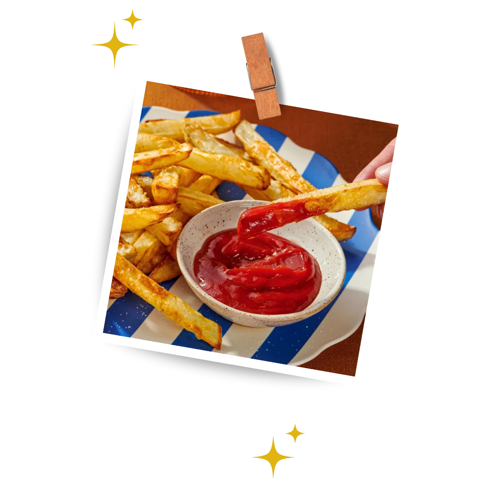

Crispy Air-Fryer French Fries

Crispy on the outside, fluffy on the inside air-fryer French fries with a golden crunch and classic potato flavor.
___________________________________________________
Ingredients
- 1 1/2 pounds (680 g) russet potatoes, peeled
- 3/4 cup (180 ml) water
- 3 tablespoons cornstarch
- Kosher salt
- Olive oil cooking spray
___________________________________________________
Directions
- Cut potatoes lengthwise into 1/2-inch-thick planks. Stack 3 or 4 planks and cut into 1/2-inch-thick sticks; repeat with remaining planks.
- In a large microwave-safe bowl, whisk together water and cornstarch, making sure no lumps of cornstarch remain on bottom of bowl. Microwave on high power, stirring every 20 seconds, until mixture begins to thicken, 1 to 3 minutes. Remove from microwave and continue to stir until mixture thickens to a pudding-like consistency. (If necessary, add up to 2 tablespoons water to achieve correct consistency.) Add cut potatoes and gently toss until each is evenly coated.
- Preheat 6-quart air fryer at 375°F (190°C) for 3 minutes. Liberally spray air-fryer basket with cooking spray. Transfer fries to preheated air-fryer basket, arranging them in a single layer with space between each one. Spray prepared fries liberally with cooking spray. If needed, cook in multiple batches to avoid overcrowding the basket. (Some cornstarch mixture will remain in bowl.) Cook for 8 minutes. Gently flip fries, then spray again liberally with cooking spray, and continue to cook until browned and crisp outside and tender inside, 6 to 12 minutes..
- Transfer to a serving plate and liberally season with salt. Serve immediately.
___________________________________________________
Back